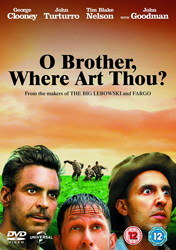
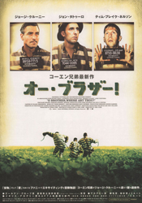
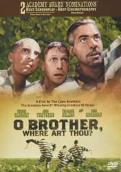
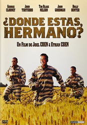
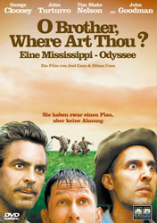

George Clooney
John Turturro
Tim Blake Nelson
Lee Weaver
Frank Collison
Chris Thomas King
Stephen Root
Charles Durning
Del Pentecost
Michael Badalucco
Mia Tate
Musetta Vander
John Goodman
Daniel von Bargen
Wayne Duvall
Ed Gale
Holly Hunter
Ray McKinnon
Roger Deakins
Loosely based on Homer's epic Greek poem The Odyssey, the movie deals with the picaresque adventures of Ulysses Everett McGill and his companions Delmar and Pete in 1930s Mississippi. Sprung from a chain gang and trying to reach Everett's home to recover the buried loot of a bank heist they are confronted by a series of strange characters - among them sirens, a cyclops, bank robber George "Baby Face" Nelson (very annoyed by that nickname), a campaigning governor and his opponent, a KKK lynch mob and a blind prophet who warns the trio that "the treasure you seek shall not be the treasure you find."
The film is set in 1937 rural Mississippi during the Great Depression. Its story is a modern satire on The Odyssey that incorporates social features of the American South. The title of the film is a reference to the Preston Sturges 1941 film Sullivan's Travels, in which the protagonist is a director who wants to film O Brother, Where Art Thou?, a fictitious book about the Great Depression.
This was the fifth film collaboration between the Coen Brothers and cinematographer Roger Deakins, and it was scheduled to be shot at a time of year when the foliage: grass, trees and bushes would be a lush green. It was filmed near locations in Canton, Mississippi and Florence, South Carolina in the summer of 1999. Digital colour correction was used to give the film a sepia-tinted look. Joel Coen stated this was because the actual set was "greener than Ireland". Deakins stated, "Ethan and Joel favoured a dry, dusty Delta look with golden sunsets. They wanted it to look like an old hand-tinted picture, with the intensity of colours dictated by the scene and natural skin tones that were all shades of the rainbow."
Initially the crew tried to perform the colour correction using a physical process, however after several tries with various chemical processes, including film bipack and bleach bypass techniques, proved unsatisfactory, it became necessary to perform the process digitally. Deakins spent eleven weeks fine-tuning the look, mainly targeting the greens, making them a burnt yellow and desaturating the overall image in the digital files. This made it the first feature film to be entirely colour-corrected by digital means, narrowly beating Nick Park's Chicken Run.




